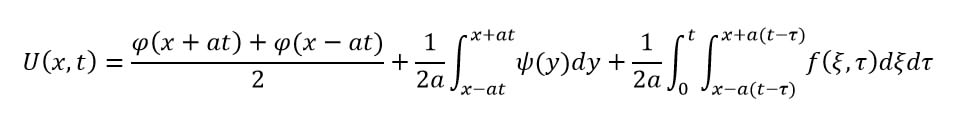

Решение однородных и неоднородных уравнений колебания струны методом Даламбера
Назад к главной
Алгоритм решения однородного уравнения колебания струны.
Шаг 1. Записать условия поставленной задачи. В общем виде условие выглядит так:
Шаг 2. Воспользовавшись формулой Даламбера для однородного уравнения колебаний струны прийти к решению:
Здесь внезапно возникает переменная у, однако не стоит переживать, она существует только для того, чтобы после интегрирования замениться на пределы интегрирования. Это делается ради получения решения определённого интеграла.
Функциями φ(x) и ψ(x) могут быть любые функции от переменной x, в том числе и константы.
Алгоритм решения неоднородного уравнения колебания струны.
Шаг 1. Записать условия поставленной задачи. В общем виде условие выглядит так:
Шаг 2. Воспользовавшись формулой Даламбера для неоднородного уравнения колебаний струны прийти к решению:

Здесь возникли ещё две переменные: ξ и τ, однако они, в сущности, играют ту же роль, что и у: с их помощью мы производим интегрирование, после чего заменяем эти переменные на пределы интегрирования.
В двойном интеграле сначала решается «внутренний» интеграл, а потом «внешний». То есть сначала решается следующий определённый интеграл:
А результат этого решения уже интегрируется во «внешнем» интеграле.